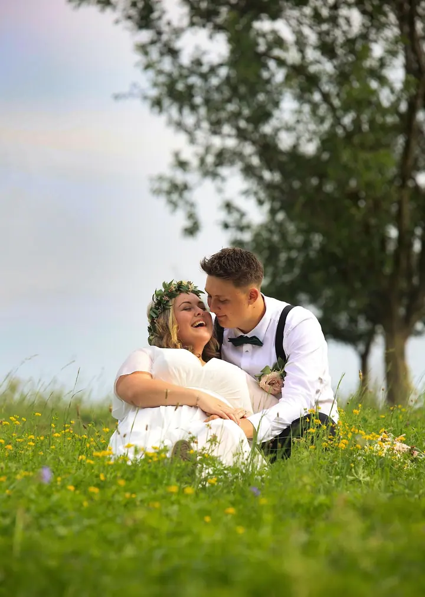
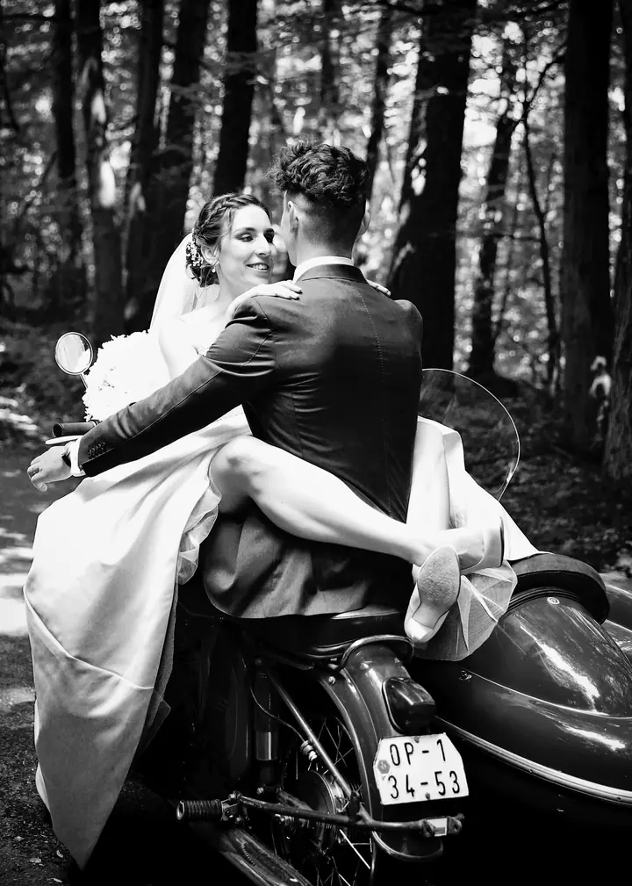
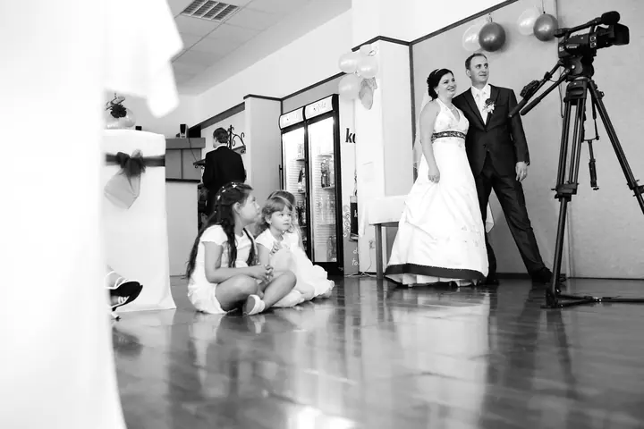

jedna
Svatby
Můžete si vybrat jen obřad, skupinové fotky a focení novomanželů, nebo celý den od příprav až po večerní zábavu. K velkému balíčku patří i předsvatební focení a obraz A3.

Svatební a rodinná fotografka · Opavsko, Štěpánkovice, Opava

Jmenuji se Simona Stanjurová a jsem svatební a rodinná fotografka ze Štěpánkovic na Opavsku. Fotím svatby od ranních příprav až po večerní zábavu, rodiny, děti i novorozence. Můj úkol je jasný: zachytit a zastavit čas, aby vám vzpomínky zůstaly.
Více o mně
Co fotím
jedna
Můžete si vybrat jen obřad, skupinové fotky a focení novomanželů, nebo celý den od příprav až po večerní zábavu. K velkému balíčku patří i předsvatební focení a obraz A3.
Rodinné focení u mě nebo venku v přírodě. Fotky dostanete v elektronické podobě a deset z nich i vytištěných.
Klidné focení miminka v prvních dnech. Dostanete až 20 fotek v elektronické podobě a 10 tištěných fotek 13×18.
Glamour focení i s vizáží, abyste se před objektivem cítila dobře. Dál fotím portréty, oslavy a 1. svaté přijímání.
Úkol zní jasně: zastavit čas pomocí fotografie.


Za objektivem
S fotografií jsem začala na střední fotografické škole v Ostravě. Dnes fotím hlavně na Opavsku a pracuji ze Štěpánkovic, kde mě také najdete.
Nejčastěji fotím svatby, ale ráda fotím i rodiny, děti, miminka, páry, glamour a portréty, oslavy nebo 1. svaté přijímání. Jde mi o vzpomínky, ke kterým se budete vracet za dny, týdny i roky.
Fotky nedávám jen na USB. Ke každému balíčku patří i tištěné fotografie, protože fotka v ruce má pro mě svou váhu. Termín si domluvíme podle vás, i o víkendu nebo ve svátek.
Simona
Zavolejte nebo napište, co plánujete a kdy. Termíny domlouvám podle objednávek, i o víkendech a svátcích.
Společně vybereme balíček, který vám sedí, třeba hodinové focení obřadu, nebo celý svatební den včetně předsvatebního focení.
Přijedu na místo a fotím v klidu a bez zbytečného stresu. V okolí Opavy je doprava zdarma.
Upravené fotky dostanete elektronicky nebo na USB a k nim i tištěné fotografie 13×18.
Portfolio
Otázky
Základní svatební balíček za 2000 Kč na hodinu zahrnuje obřad, skupinky a focení novomanželů, do 200 záběrů na USB a 20 tištěných fotek. Celodenní balíček maxi za 20 000 Kč pokryje den od příprav po večerní zábavu včetně předsvatebního focení.
U rodinného focení v interiéru i u newborn focení dostanete do 20 fotek elektronicky a 10 fotek vytištěných ve formátu 13×18. Každá další fotka stojí 70 Kč.
V okolí Opavy jezdím zdarma, jinde počítám 10 Kč za kilometr.
Ano, focení domlouvám podle objednávek každý den v týdnu i o svátcích.

Napište pár vět o tom, co si představujete. · +420 737 888 790